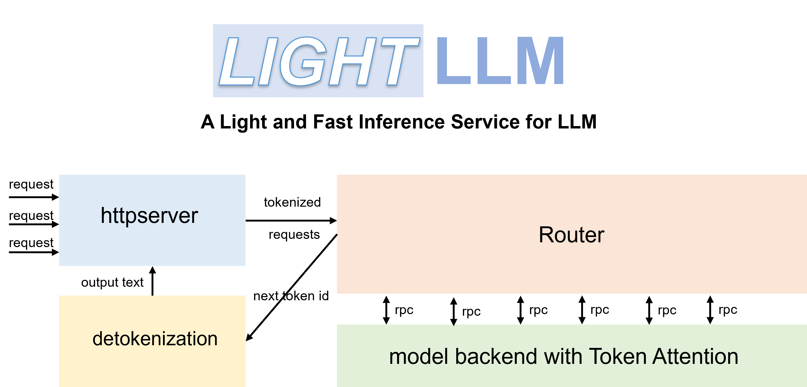

LightLLM
https://github.com/ModelTC/lightllm
LightLLM是一个基于Python的LLM（大型语言模型）推理和服务框架，以其轻量级设计、易于扩展和高速性能而闻名。

LightLLM包括以下特点：
三进程异步协作：token化、模型推理和去token化是异步执行的，从而大大提高了GPU的利用率
Nopad（Unpad）：支持跨多个模型的无填零注意操作，有效处理长度差异较大的请求
动态批处理：请求的动态批处理调度
FlashAttention：结合FlashAttention，提高速度并减少推理过程中GPU内存占用
张量并行性：利用多个GPU的张量并行性进行更快的推理
TokenAttention：实现逐Token的KV缓存内存管理机制，允许在推理过程中零内存浪费
高性能路由器：与TokenAttention合作，精心管理每个token的GPU内存，从而优化系统吞吐量
Int8KV缓存：此功能将使token的容量几乎增加一倍。只有LLAMA支持
| vLLM | LightLLM |
|---|---|
| Total time: 361.79 s | Total time: 188.85 s |
| Throughput: 5.53 requests/s | Throughput: 10.59 requests/s |